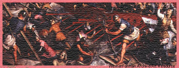

|
As May wore on, the naval blockade and the bombardment were having their desired effect. By the end of the month, defeat came for Constantinople and the Christian empire it ruled.
|
|
|
DAY 48: Wednesday, May 23 (Constantinople) A Byzantine ship sent to search for an eagerly awaited rescue fleet from Venice returned today with disappointing news. After a 20-day search, the ship found no sign of the fleet, which the Christians pray will break the sultan's blockade. Meanwhile, life in the besieged city has settled into a routine. By day, the Ottomans bombard the walls. By night, the Christian defenders emerge from the city and repair the damage. The Ottomans have attacked three times since their first assault, but have been beaten off each time. The city is beginning to run short of food. Early this month, Emperor Constantine instituted rationing. DAY 50: Friday, May 25 (Constantinople)
 Many of Constantinople's defenders are beginning to lose heart. People are recalling the old prophecy that the city would never fall while the moon waxed in the heavens. Yesterday, the moon was full. Perhaps more ominously, the moon's light grew dark for three hours during an eclipse. Hereafter, the moon will wane.DAY 51: Saturday, May 26 (Ottoman Camp) The attackers are beginning to lose heart. Seven weeks after the start of the siege, their resolve shows signs of weakening. Although their artillery has damaged the walls, repeated assaults have failed to penetrate them. The Ottoman fleet has been beaten in each of its encounters with the Christian defenders. Informed sources report that the sultan has learned that the Venetian fleet has sailed for Constantinople. Today, one of the sultan's closest counselors formally asked the sultan to abandon the siege. But another counselor urged an attack. Even if a Venetian fleet came, he argued, the sultan's forces would outnumber it. Many of the younger generals rose in support. Encouraged, Muhammad sent the second counselor to ask the troops what they wished to do. Not surprisingly, perhaps, he reported that the soldiers called for an immediate attack. The sultan announced that an assault would begin as soon as preparations could be made. DAY 54: Tuesday, May 29 (Constantinople) Today, the city fell. Constantinople, last stronghold of the once-mighty Roman Empire, has crumbled under an Ottoman onslaught. The assault, which began at about 1:30 a.m., came in three waves. First, the sultan sent in his least valuable troops to tire the defenders. Then he sent in regiments of Anatolian Turks. Finally, to the accompaniment of music so loud that it could be heard across the Bosporus, the sultan's elite and well-rested troops, the Janissaries, joined the attack. The exhausted Christian defenders held off the Janissaries for an hour. But just before sunrise, Giustiniani, the Genoese general, was severely wounded by a gunshot. Although the emperor pleaded with Giustiniani to remain at the battle, the general insisted on being carried into the city for medical treatment. When the Genoese troops saw their leader leaving, they panicked and fled. The emperor was left with only his own Roman forces, which were quickly overwhelmed by the Janissaries. The emperor was last seen flinging off his imperial insignia and plunging forward into the oncoming hordes of Ottoman soldiers. |